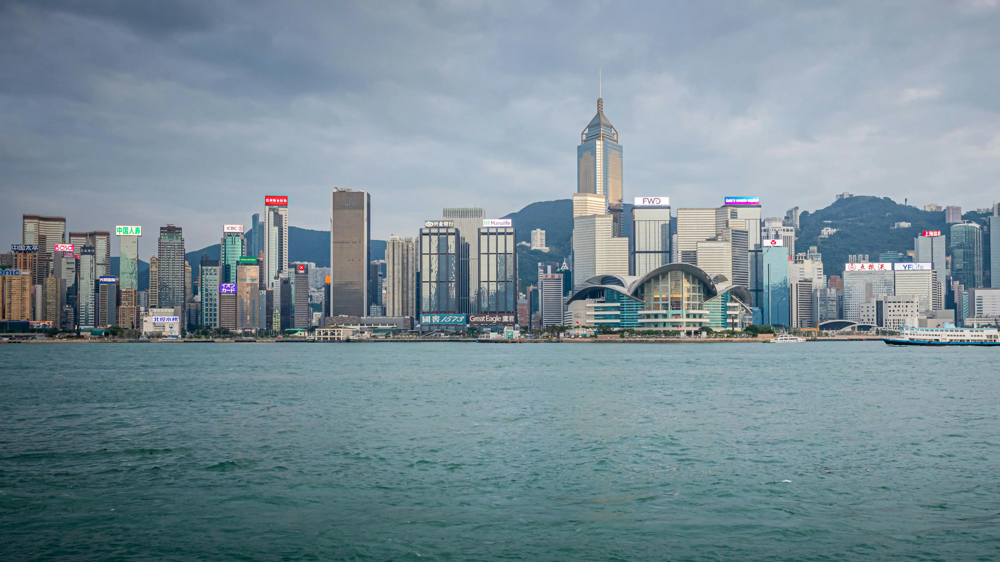
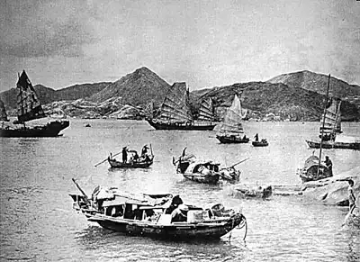
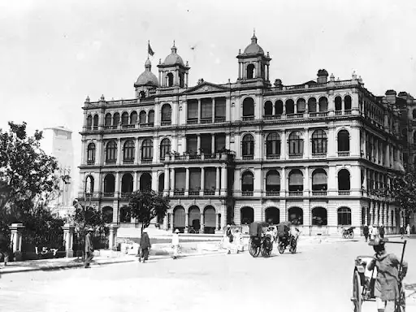
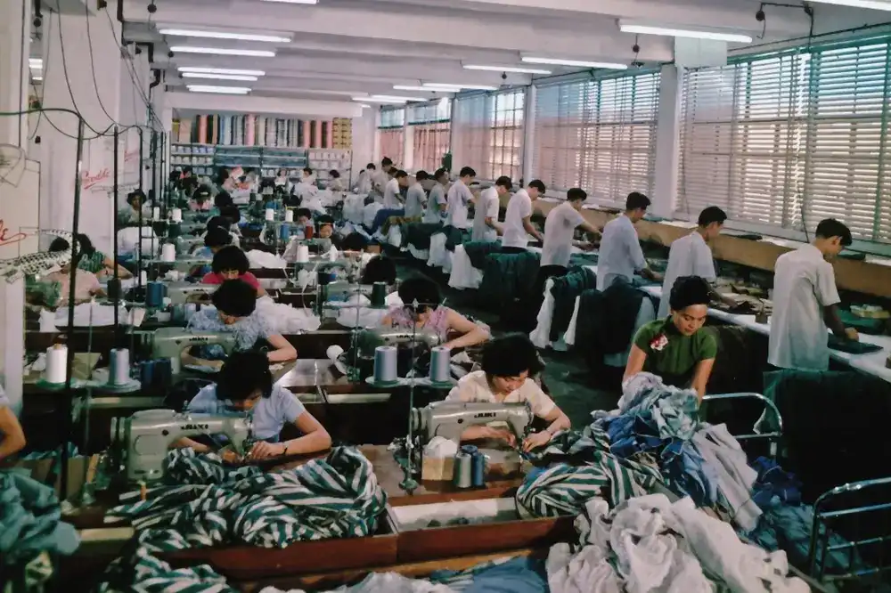
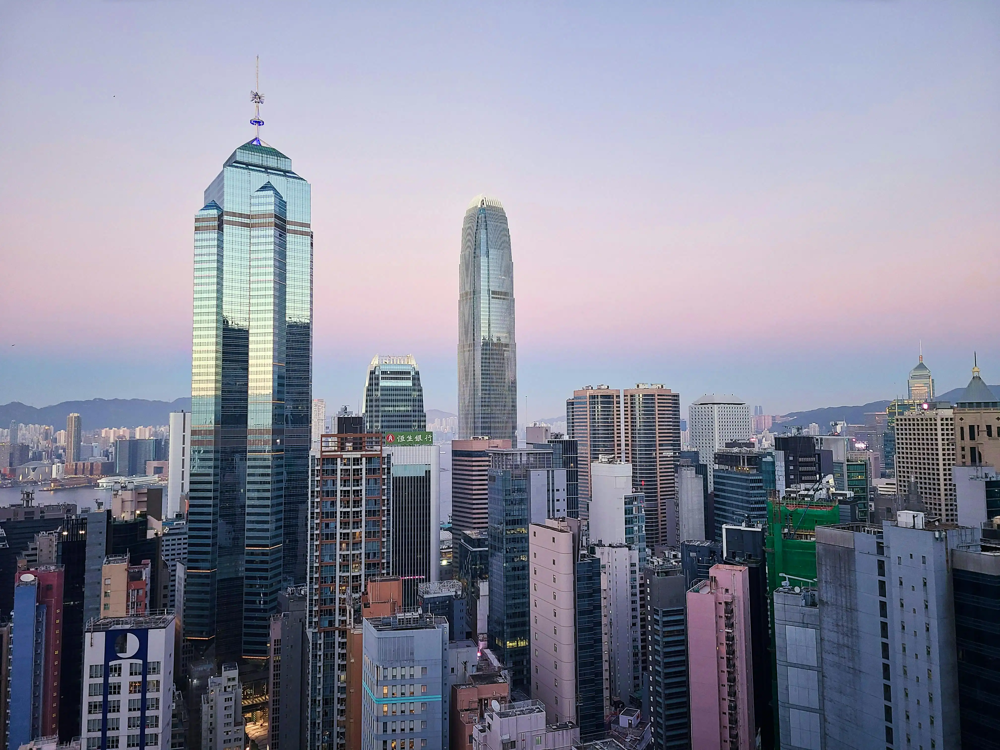
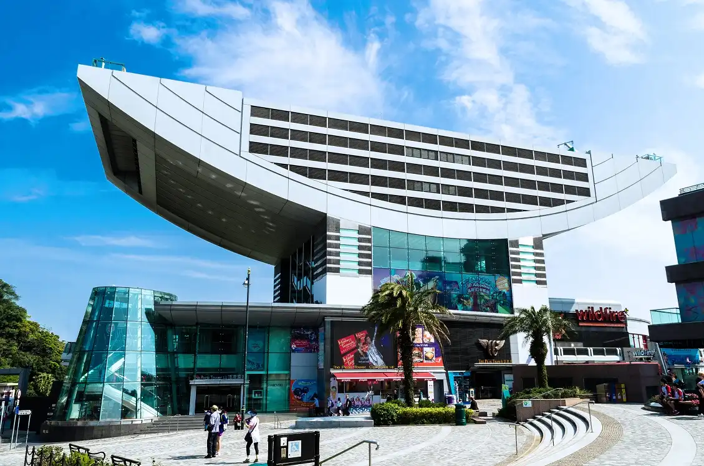
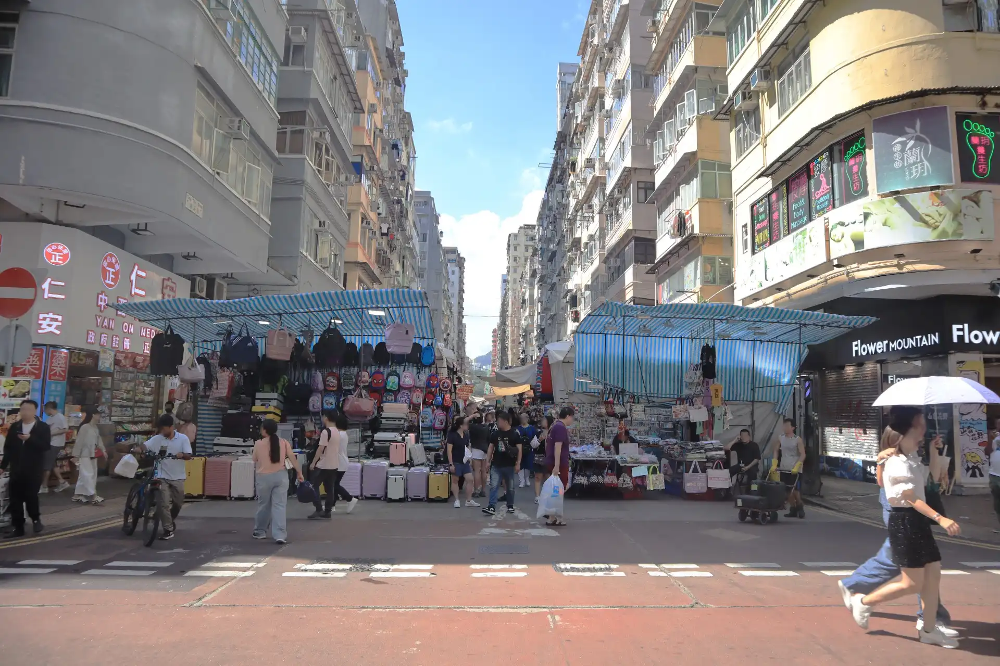
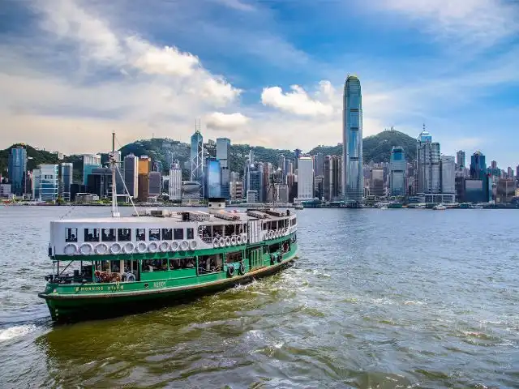
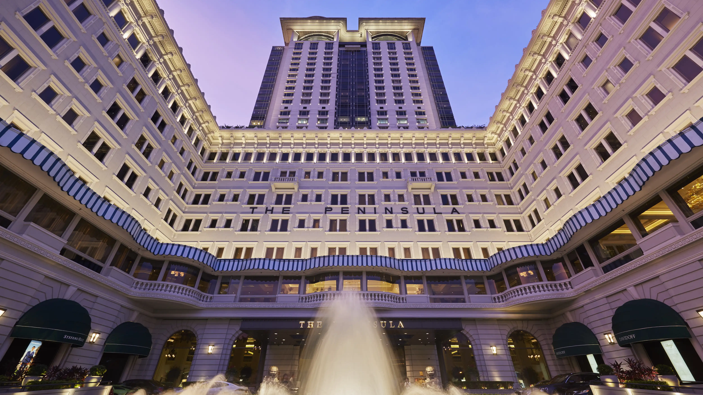

curated by James Chiu, the Expert of Hong Kong
Hong Kong, the "Pearl of the Orient," is a world-class financial hub where East meets West in a dazzling display of energy and culture.
Home to over 7.4 million people, this vertical city is famous for its iconic skyline and deep-water harbor. From the neon-lit streets of Mong Kok to the serene hiking trails of the New Territories, Hong Kong offers a unique fusion of colonial history and cutting-edge modernity.
Southern China
7.4+ Million
1841 (Modern Era)
Cantonese & English
The world's largest collection of skyscrapers
Global Geopark & Living Intangible Heritage

Victoria Harbor is the lifeblood of Hong Kong, providing a stunning natural backdrop to the city's financial district. The famous Star Ferry has been crossing these waters for over a century, offering the best views of the skyline.
Hong Kong's journey from a "fragrant harbor" to a global metropolis is a story of resilience, transformation, and a unique fusion of East and West.

Long before the skyscrapers, Hong Kong was a collection of quiet fishing villages and salt farms. The sheltered waters of the harbor served as a sanctuary for merchants and pirates alike, earning its name "Heung Gong" or Fragrant Harbor.

Following the Treaty of Nanjing, Hong Kong became a British Crown Colony. The City of Victoria was established, and the island quickly transformed into a vital free port, bridging the gap between Imperial China and the British Empire.

A surge in population fueled an industrial revolution. "Made in Hong Kong" became a global household label, while the city's unique "Lion Rock Spirit" defined a generation that built Hong Kong into one of the Four Asian Tigers.

In 1997, sovereignty was returned to China under the "One Country, Two Systems" principle. Today, Hong Kong stands as a premier international financial center, boasting the world's most iconic skyline and a diverse, multicultural identity.
Experience the unique fusion of Hong Kong's "East meets West" lifestyle. From the clattering of dim sum trolleys in traditional teahouses to the neon-lit nights of world-class music and film, Hong Kong is a city where ancient heritage and urban trendsetting collide.
Discover Hong Kong's most iconic landmarks and experiences that blend breathtaking nature with urban energy.

Ride the historic Peak Tram to the highest point on Hong Kong Island. Experience the world-famous panoramic view of the glittering skyscrapers and Victoria Harbour.
#1 Must-Visit
Historic Peak Tram
Central District
Duration: 2-3hrs
Journey across Lantau Island via the Ngong Ping 360 cable car to visit this majestic bronze statue. A serene escape into Hong Kong's spiritual and mountainous landscape.
Cultural Icon
268 Steps Climb
Lantau Island
Duration: 4-5hrs

Dive into the most densely populated place on earth. From the neon-soaked Ladies' Market to street food stalls, Mong Kok is the ultimate Hong Kong sensory overload.
Best Street Food
Local Market Style
Kowloon Side
Duration: 2hrs

Board the legendary Star Ferry or walk the Avenue of Stars. Every night, the skyline erupts in a coordinated light show that defines the "Pearl of the Orient."
Top 3 City Skyline
Star Ferry Ride
Tsim Sha Tsui
Duration: 1-2hrs
Everything you need to know to plan your perfect trip to Hong Kong. From practical tips to cultural insights, we've got you covered.
